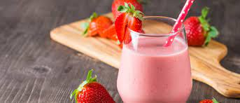

Batido de fresa

Los batidos de frutas son una forma estupenda, saludable y sencilla de que los niños consuman fruta.
En este batido las fresas aportan una gran cantidad de vitamina C, y por otro lado, la leche aporta calcio,
necesario para el correcto crecimiento de los niños.
Ingredientes
Preparación
- Lavamos las fresas, les cortamos los rabitos y
las cortamos en trozos, reservando algunas para la decoración.
- Las embadurnamos con azúcar y dejamos reposar durante 20 minutos en la nevera.
- A continuación ponemos las fresas con la leche en un bol y
las trituramos con ayuda de la batidora hasta conseguir un batido cremoso.
- Si nos gusta más dulce podemos añadirle un poco más de azúcar.
- Lo pasamos por un colador si queremos que quede más fino y
lo metemos en el frigorífico para que se enfríe.
Menú